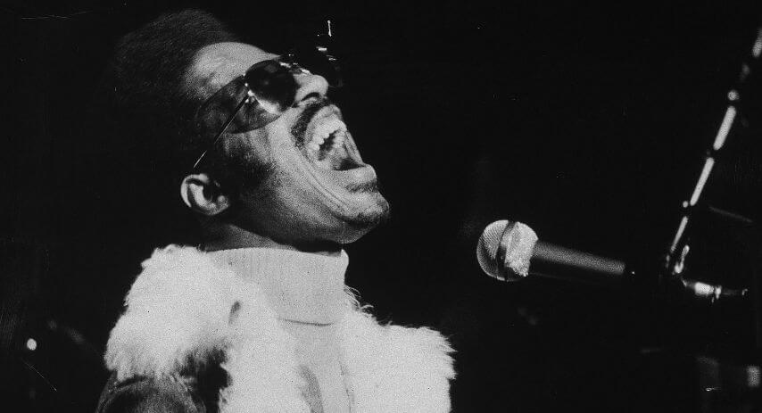

Pero pronto los médicos descartaron que pudiera tener secuelas serias del accidente, siendo su amigo y director de gira Ira Tucker quien logró una primera respuesta de Stevie en su estado de coma. Ira Tucker comentó: "Recuerdo cuando llegué al hospital en Winston-Salem ... hombre, ni siquiera podía reconocerlo. Tenía la cabeza hinchada hasta cerca cinco veces el tamaño normal. Nadie había logrado comunicarse con él. Sabía que le gustaba escuchar música muy alto y pensé que tal vez si le gritaba al oído..., el médico me dijo que lo intentara. La primera vez no recibí ninguna respuesta, pero al día siguiente volví y me acerqué al oído y canté Higher Ground. Su mano descansaba sobre mi brazo y después de un rato sus dedos comenzaron a irse al ritmo de la canción. ¡Dije que sí! ¡Yeeeeaaah! ¡Lo va a conseguir!".
Fue trasladado a Los Ángeles, donde inició una larga y dura convalescencia. Se percató que había perdido el sentido del olfato y el del gusto. Este último logró recuperarlo, aunque la mayor preocupación de Stevie era si su habilidad como músico estaba intacta. De nuevo Ira Tucker fue su motivador: "
Trajimos uno de sus instrumentos -creo que era el clavinet- al hospital. Por un tiempo, Stevie simplemente se quedó bloqueado a su lado, no hizo nada con él. Se podía percibir su pánico a tocarlo, su nerviosismo y temor a haber perdido su habilidad y simbiosis con el instrumento, no sabía si podría aún tocar y jugar con el teclado. Pero finalmente lo tocó, hombre, solo podías ver la felicidad propagarse sobre él. Nunca lo olvidaré". Durante un año tuvo que medicarse para aliviar los fuertes dolores de cabeza, y el gran cansancio quer lo aquejaba. Pero su
recuperación se puede considerar como milagrosa. Reforzó si cabe aún
más su fe y fuerza espiritual, cambiándole su forma de visionar el mundo que lo rodea, como así pudo percibirse en álbumes posteriores. Hablando de su accidente decía que "
nunca se puede cambiar lo que ha sucedido, todo es de la manera que tiene que ser, y todo lo que me ha pasado tenía que suceder", reafirmando su creencia de que todos tenemos un destino en la vida.

Stevie Wonder reapareció en público a finales de septiembre, tocando junto con Elton John en la ciudad de Boston. Era el concierto con el que Elton John clausuraba su gira estadounidense. Los médicos habían prohibido excederse a Stevie en su actividad como músico, por lo que Stevie se mantuvo apartado de más actuaciones dedicándose a su faceta compositiva para su nuevo álbum
'Fullfillingness' First Finale'.
Fue ya el 20 de enero de 1974 cuando Stevie Wonder -ya bastante recuperado- inició con un concierto la gala discográfica internacional de Cannes, el MIDEM en Francia. Luego viajó a Londres para un show en el Rainbow teatro, regresando después a Estados Unidos para recoger tres premios Grammy. La gira prevista antes del accidente por 20 ciudades entre marzo y abril de 1974 quedó suspendida a excepción de la del Madison Square Garden a finales de marzo.
Allí un emocionado Stevie Wonder miró al cielo, y enseñando sus cicatrices en la frente, dió gracias a Dios por estar vivo.
Lo divino sabía que Stevie tenía mucho por ofrecernos todavía, lo humano sabía nuestra necesidad de él, y surgió esa segunda oportunidad.
Un milagro llamado Stevie Wonder que permitió que la humanidad ganase a un ser que revolucionara el concepto de la música soul, un ser dedicado a transmitir el amor y la cordura en unos tiempos de por sí críticos y dificiles de vivir.
Si nuestro destino ya está escrito en las estrellas, al pergamino estelar de Stevie Wonder le queda todavía
mucho recorrido por mostrarnos, mucho más amor que repartir, muchas más emociones que compartir, y por qué no, todavía
mucha más música con la que sorprendernos.